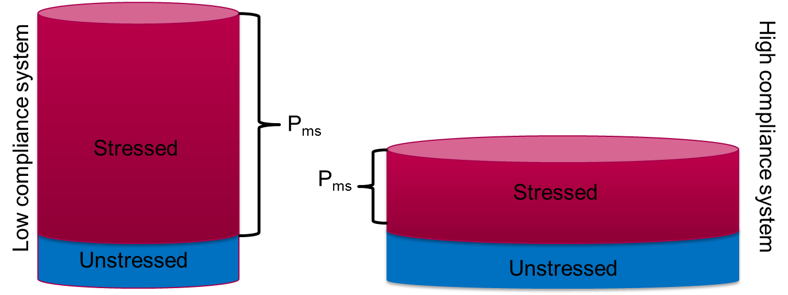

Module N5
The curves, the equation, and the shock-type grid
We left the last module with a balance the circulation has no choice but to satisfy: over time, venous return must equal cardiac output. The clearest way to watch it settle that balance is to draw both relationships on one pair of axes, with right atrial pressure (RAP) running along the bottom and flow up the side. Plotted this way, venous return and cardiac function run in opposite directions, and the single point where they cross is the patient.

Reading the Guyton (venous-return) curve
Blood leaving the heart fills a reservoir of high-capacitance veins and venules that holds most of the body's volume. Roughly seventy percent of that volume merely fills the vessels without stretching them (the unstressed volume); the remaining thirty percent distends the walls, and the pressure it generates is the mean systemic filling pressure (Pms), which sits around 8 to 10 mmHg. Return toward the heart is driven by the gradient between that upstream Pms and the downstream RAP, divided by the resistance of the venous circuit.
The curve therefore slopes down. Two features carry most of the physiology. Its x-intercept is Pms, the point where flow reaches zero because RAP has risen to meet the filling pressure; add volume or tighten venous tone and the whole curve slides right to a higher Pms, yielding more return at any given RAP. There are exactly two ways to move Pms: change the total volume in the reservoir (fluids in or out), or change its compliance so that unstressed volume is recruited into stressed volume, which is what neural tone, the catecholamine response, and vasoactive drugs do. Its slope is the inverse of venous resistance, and because the small veins and venules present such an enormous cross-sectional area, it is the larger vessels such as the vena cava that set most of Rv.

One more feature catches people out: the curve does not rise forever as RAP falls. It flattens into a plateau of maximal venous return. The great veins entering the chest stay open only while the pressure inside them exceeds the pressure around them, a positive transmural pressure. Once RAP falls below that surrounding pressure (roughly atmospheric, since abdominal pressure is near zero), the veins collapse where they cross into the thorax and behave as a vascular waterfall, or Starling resistor. Beyond that point, lowering RAP further pulls back no additional blood; the largest gradient the system can ever use is Pms minus the surrounding pressure.
Reading the Frank-Starling (cardiac-function) curve
The cardiac-function curve slopes up: more filling stretches the myocytes, and up to a point, longer sarcomeres form more cross-bridges and grow more sensitive to calcium (length-dependent activation), so a higher RAP yields more output. What moves the whole curve is the state of the pump. Better contractility, an optimal heart rate, or lower afterload shifts it up (more output for the same filling); worse contractility or a disproportionate afterload shifts it down. And because the right atrium is thin-walled, the pressure around it moves the curve too. Imagine the heart transiently stopped: with flow at zero, the measured RAP simply equals the pleural pressure surrounding the chamber. A spontaneous breath lowers pleural pressure and slides the curve left; a positive-pressure breath raises it and slides the curve right. That single fact, that ventilation shifts the cardiac-function curve, is the seed of the heart-lung interactions taught later.
This is also where a real source of confusion resolves. RAP appears on both curves but means opposite things. On the Starling curve it is preload, a surrogate for myocyte stretch, so a higher RAP buys more output. On the Guyton curve it is a backpressure opposing venous return, so a higher RAP buys less. In Starling's original open-chest preparation the heart sat in the atmosphere and RAP was a faithful stand-in for transmural distending pressure; in the intact chest it is only a surrogate, because pleural pressure, pericardial constraint, or a stiff right ventricle can each raise the measured RAP without raising true preload. The quantity that actually reflects fiber stretch is the transmural pressure, the intracavitary pressure minus the pressure outside.
Where they meet: the operating point
Because what goes in must come out, the patient must live at the one point where the two curves cross. That intersection fixes both the cardiac output and the RAP at once, and it is the payoff of the whole module: every therapy is a move of one curve. A fluid bolus or a vasopressor raises Pms and slides the venous-return curve right; an inotrope lifts the cardiac-function curve, and relieving a high afterload does the same. Predict the new crossing before you act, then check whether the patient landed there, and an intervention becomes an experiment with a stated hypothesis.
Preload responsiveness in one picture
This is also the cleanest picture of fluid responsiveness. Giving volume shifts the venous-return curve to the right. If the operating point sits on the steep part of the cardiac-function curve, that rightward shift lands at a meaningfully higher output: the patient is preload responsive and fluid helps. If it sits on the flat part, the same shift buys almost no extra output and only raises filling pressures: the patient is not responsive, and the fluid mostly drives congestion. Every bedside test of responsiveness - the passive leg raise, pulse-pressure variation, an end-expiratory occlusion, or a small measured bolus - is just a way of asking which part of the curve the patient is on before committing to volume.
From the curves to one equation
The same logic generalizes beyond the two curves. Across every interface in the circuit, a simplification of the Hagen-Poiseuille law holds: assuming laminar flow through a non-distensible tube, the pressure drop across the interface equals its resistance times the flow, and the flow is always the cardiac output.
MSFP − RAP = VR × CO
mean PAP − LAP = PVR × CO
DO2 = CO × CaO2The venous line (MSFP − RAP) is the Guyton curve; the arterial line (MAP − Pcrit) is the Starling curve reframed. Whichever interface you examine, cardiac output is the common denominator.
From the equation to the grid
Read the measurable variables in those equations together and each kind of shock leaves a fingerprint. That is all the shock-type grid is: not a table to memorize, but the readout of the physiology above.
| Shock type | MAP | CO | RAP | PAPm | LAP | SVR |
|---|---|---|---|---|---|---|
| Cardiac (LV) | ↓ | ↓ | ↑ | ↔/↑ | ↑ | ↑ |
| Obstructive (RV) | ↓ | ↓ | ↑ | ↑ | ↔ | ↑ |
| Distributive | ↓ | ↔/↑ | ↓ | ↔ | ↔ | ↓ |
| Hypovolemic | ↓ | ↓ | ↓ | ↔ | ↔ | ↑ |
Take the septic patient as a worked example. Sepsis dilates venules and shifts stressed volume back to unstressed, while fluid losses lower total volume, so the venous-return curve first slides left and cardiac output falls. Then the catecholamine response lifts the cardiac-function curve, and dilation of the large veins with shunting toward low-resistance, fast-time-constant beds lowers venous resistance, steepening the return curve and pushing output back to normal or above. The grid simply records that endpoint: a low RAP with a preserved or high CO. From there you choose the one parameter that best separates your hypothesis from its rivals. A low RAP narrows the field to distributive or hypovolemic; the cardiac output does more, distinguishing distributive shock from all the others at once. Because you understand where each number comes from, you can also see the grid's limits, for instance a patient whose MAP still reads acceptable while forward flow is already failing.
One number from the grid deserves its own short detour: the right atrial pressure, and how far to trust it for volume decisions.
RAP and volume status →With the physiology and the grid in hand, we can finally turn them into a repeatable bedside method.
References
- Guyton AC. Determination of cardiac output by equating venous return curves with cardiac response curves. Physiol Rev. 1955;35(1):123-129.
- Patterson SW, Starling EH. On the mechanical factors which determine the output of the ventricles. J Physiol. 1914;48:357-79.
- Sylvester JT, Goldberg HS, Permutt S. The role of the vasculature in the regulation of cardiac output. Clin Chest Med. 1983;4(2):111-26.
- Funk DJ, Jacobsohn E, Kumar A. The role of venous return in critical illness and shock - Part I: physiology. Crit Care Med. 2013;41(1):255-262.
- Jacob R, Dierberger B, Kissling G. Functional significance of the Frank-Starling mechanism. Eur Heart J. 1992;13 Suppl E:7-14.
- Schipke JD, et al. Static filling pressure in patients during induced ventricular fibrillation. Am J Physiol Heart Circ Physiol. 2003;285(6):H2510-5.
- Rola P, Kattan E, Siuba M, et al. J Pers Med. 2025;15(5):207.